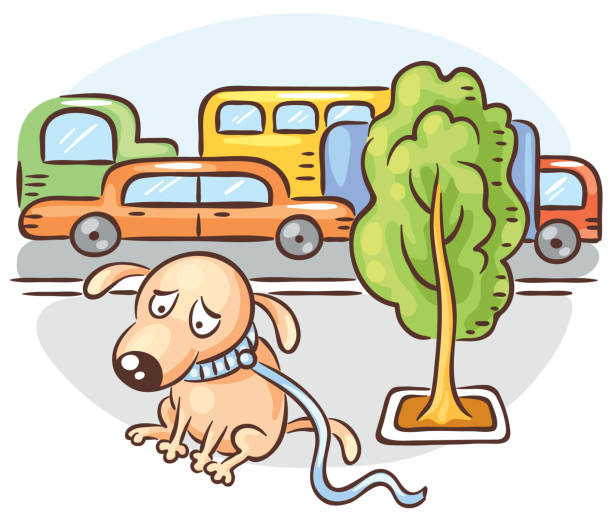

ERROR 404
Parece que te has perdido...
La pagina que estás buscando no existe.
Puede que te interese seguir navegando en:
adoptaunfirulais.comLa pagina que estás buscando no existe.
Puede que te interese seguir navegando en:
adoptaunfirulais.com